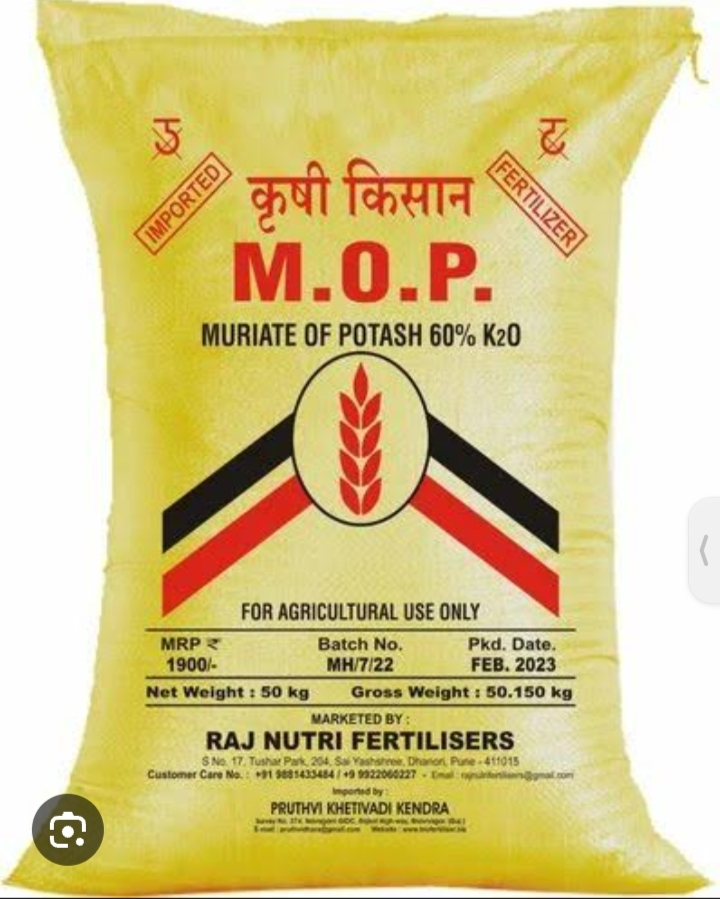

Description:
Potassium Chloride, also known as muriate of potash, is an essential fertilizer for sugarcane cultivation. It supplies potassium, which aids in overall plant development, enhances stalk strength, and improves resistance to diseases and environmental stresses.
- Content:
1. Nitrogen (N): 0%
2. Phosphorus (P): 0%
3. Potassium (K): 60%
- Points:
- High potassium content contributes to better stalk strength and sugar accumulation.
- Ideal for application during the later growth stages to support maturation and sugar accumulation.
- Helps sugarcane plants withstand drought and pest pressures, ensuring better yields.